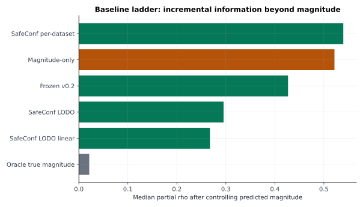
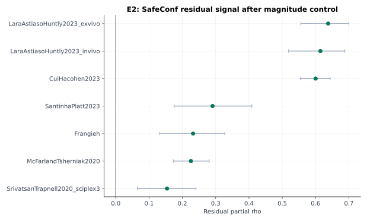
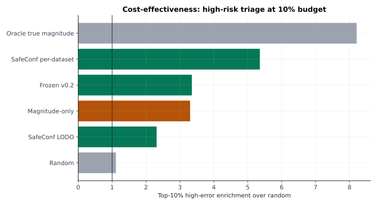
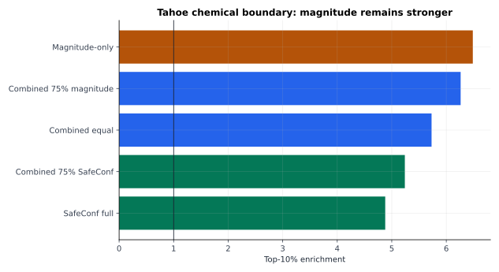
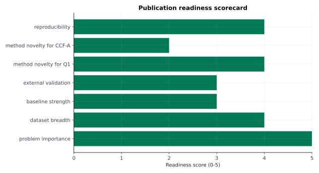

目标：把现有 SafeConf 从“实验结果很多”整理成“一区投稿可辩护的证据链”。
主线冲一区生信方法论文，CCF-A 作为方法升级线。 SafeConf 的强点是任务级风险审计、复核优先级和失败边界识别；弱点是 chemical 场景中 magnitude 更强，外部任务级验证还要补。
七主数据集 evidence chain。
控制 predicted magnitude 后仍保留信息。
来自 baseline ladder。
强竞争基线，不能回避。
论文中避免把 SafeConf 写成新的扰动预测器，也避免宣称全面超过 magnitude。更稳的写法：SafeConf 对已有扰动预测做风险审计，在 gene/cross-context 场景有增量价值，在 chemical 场景需要和 magnitude 形成边界或组合。





| score_label | role | n_datasets | median_aligned_rho | median_partial_rho_control_magnitude | median_aurc_reduction_vs_random_pct | deployment_status |
|---|---|---|---|---|---|---|
| Magnitude-only | strong deployable competitor | 7 | 0.457312 | 0.521609 | 17.234124 | deployable |
| Frozen v0.2 | frozen protocol score | 7 | 0.427781 | 0.426870 | 18.005655 | deployable |
| SafeConf LODO | cross-dataset transfer score | 7 | 0.421044 | 0.295330 | 19.825290 | deployable |
| SafeConf LODO linear | simpler transfer variant | 7 | 0.354568 | 0.267659 | 12.147794 | deployable |
| Oracle true magnitude | non-deployable oracle diagnostic | 7 | 0.740302 | 0.021158 | 38.482182 | non-deployable oracle |
| SafeConf per-dataset | within-dataset upper reference | 7 | 0.756795 | 0.539645 | 34.476792 | reference only |
| Random | sanity baseline | 7 | -0.001642 | 0.007144 | 1.538695 | reference only |
| dataset_name | n | residual_partial_rho_point | residual_partial_rho_ci_low | residual_partial_rho_ci_high | aurc_improvement_magnitude_minus_combined_point | incremental_claim |
|---|---|---|---|---|---|---|
| CuiHacohen2023 | 1253 | 0.600254 | 0.554509 | 0.644054 | 0.045316 | adds information beyond magnitude |
| Frangieh | 633 | 0.232173 | 0.131738 | 0.327485 | 0.000823 | adds information beyond magnitude |
| LaraAstiasoHuntly2023_exvivo | 323 | 0.637820 | 0.555694 | 0.700279 | 1.132238 | adds information beyond magnitude |
| LaraAstiasoHuntly2023_invivo | 375 | 0.614665 | 0.519005 | 0.688003 | 2.433221 | adds information beyond magnitude |
| McFarlandTsherniak2020 | 1163 | 0.225657 | 0.172638 | 0.280739 | 0.307478 | adds information beyond magnitude |
| SantinhaPlatt2023 | 273 | 0.290667 | 0.175238 | 0.408804 | 0.087730 | adds information beyond magnitude |
| SrivatsanTrapnell2020_sciplex3 | 564 | 0.153818 | 0.064503 | 0.240958 | 0.002741 | adds information beyond magnitude |
| score_label | top_fraction | aligned_rho | precision | enrichment | magnitude_enrichment_same_top_fraction | delta_enrichment_vs_magnitude_same_top_fraction | interpretation |
|---|---|---|---|---|---|---|---|
| SafeConf full | 0.1 | 0.398933 | 0.488213 | 4.880317 | 6.486419 | -1.606102 | below magnitude; keep as boundary evidence |
| Magnitude-only | 0.1 | 0.485376 | 0.648883 | 6.486419 | 6.486419 | 0.000000 | chemical dominant baseline |
| Combined equal | 0.1 | 0.489051 | 0.573201 | 5.729876 | 6.486419 | -0.756542 | below magnitude; keep as boundary evidence |
| Combined 75% magnitude | 0.1 | 0.503299 | 0.626551 | 6.263177 | 6.486419 | -0.223242 | below magnitude; keep as boundary evidence |
| Combined 75% SafeConf | 0.1 | 0.452798 | 0.524194 | 5.239984 | 6.486419 | -1.246434 | below magnitude; keep as boundary evidence |
| priority | gap | action | deliverable | status |
|---|---|---|---|---|
| 1 | SafeConf vs magnitude 的边界仍会被审稿人追问 | 新增统一强基线审计：报告 SafeConf、magnitude、support、context、disagreement、combined；按 gene / chemical / cross-context 分层。 | E9_STRONG_BASELINE_AUDIT.csv + Fig: baseline ladder by domain | next experiment |
| 2 | 外部验证仍偏聚合层面 | 接入一个冻结 benchmark：优先 scPerturBench 可落地子集；失败也要形成资源审计和可复现实验日志。 | E10_EXTERNAL_TASK_VALIDATION/ | next experiment |
| 3 | 方法学贡献需要从打分推进到可控风险 | 已生成 retrospective selective prediction audit；下一步补 calibration split 与 risk-control guarantee。 | E11_selective_prediction_audit_20260707/；formal conformal guarantee 待补 | audit generated; guarantee pending |
| 4 | 生物学故事仍偏方法验证 | 选择 2–3 个高风险任务做案例：预测器分歧、历史支持、细胞背景、通路/marker 是否解释错误。 | E12_BIOLOGICAL_CASE_STUDIES/ | paper narrative |
| 5 | 代码与结果虽然多，但投稿时需要一键复现边界 | 建立 paper/ 级别 manifest：每张主图对应源 CSV、脚本、commit、运行命令。 | PAPER_REPRODUCIBILITY_MANIFEST.md | engineering |
| track | target | fit | required_upgrade | risk |
|---|---|---|---|---|
| Q1 bioinformatics method | Bioinformatics / Briefings in Bioinformatics / PLOS Computational Biology | 最高。SafeConf 是单细胞扰动预测的可靠性评估与实验决策工具。 | 统一强基线、外部验证、risk-budget 决策曲线、可复现包。 | 如果写成预测模型，会被要求直接超过 SOTA；必须写成 post-prediction risk auditing。 |
| higher biological computation | Genome Biology / Cell Systems | 中等偏高。需要把方法和真实生物案例绑紧。 | 补 biological case study：错误富集任务对应通路、药物机制或细胞背景差异。 | 纯方法审计可能被认为生物发现不足。 |
| CCF-A AI | AAAI / IJCAI / NeurIPS workshop-to-main route / ICML-style ML venue | 当前中等。需要把 SafeConf 升级成 risk-controlled selective prediction 方法。 | conformal/selective risk control、跨域分布偏移理论化、公开 benchmark 对比。 | 现有版本更像应用方法；直接投 CCF-A 主会很危险。 |
| fallback but still useful | BMC Bioinformatics / GigaScience / Scientific Reports | 保底。适合在一区冲刺失败后快速转投。 | 不建议先走这条；会浪费当前证据积累。 | 安全但上限低。 |
baseline_ladder: docs/实验结果/Reliability_model_corrected_20260610/tables/RELIABILITY_BASELINE_LADDER.csvwithin_magnitude: docs/实验结果/Reliability_model_corrected_20260610/tables/RELIABILITY_WITHIN_MAGNITUDE_STRATUM.csvformal_main: docs/实验结果/Evidence_to_Claim_20260615/figure_ready_tables/FIG2_FORMAL_MAIN_FOREST.csve2_residual: docs/实验结果/Evidence_to_Claim_20260615/figure_ready_tables/FIG3_E2_MAGNITUDE_RESIDUAL.csvcost_effectiveness: docs/实验结果/Evidence_to_Claim_20260615/figure_ready_tables/FIG5_COST_EFFECTIVENESS.csvrisk_coverage: docs/实验结果/Evidence_to_Claim_20260615/figure_ready_tables/SFIG_RISK_COVERAGE.csve8b_external: docs/实验结果/Evidence_to_Claim_20260615/figure_ready_tables/FIG4_E8B_EXTERNAL_BENCHMARK.csvtahoe_d5: docs/实验结果/Tahoe_D5_combined_triage_20260627/tables/TAHOE_D5_POINT_SUMMARY.csvsource_files: docs/实验结果/Evidence_to_Claim_20260615/figure_ready_tables/SOURCE_FILES_USED.csv